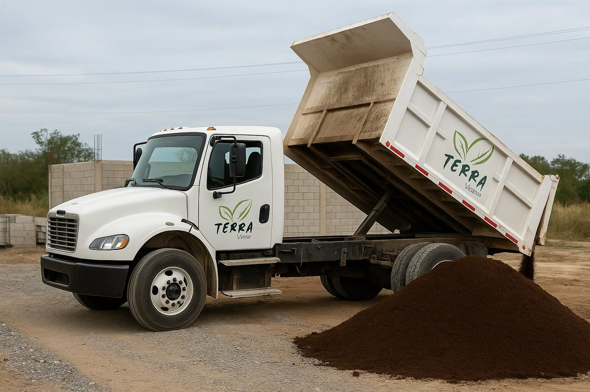
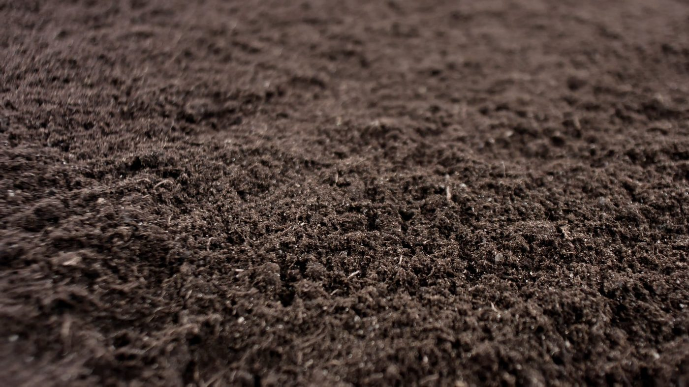
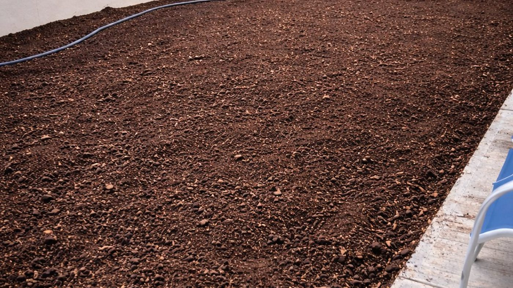
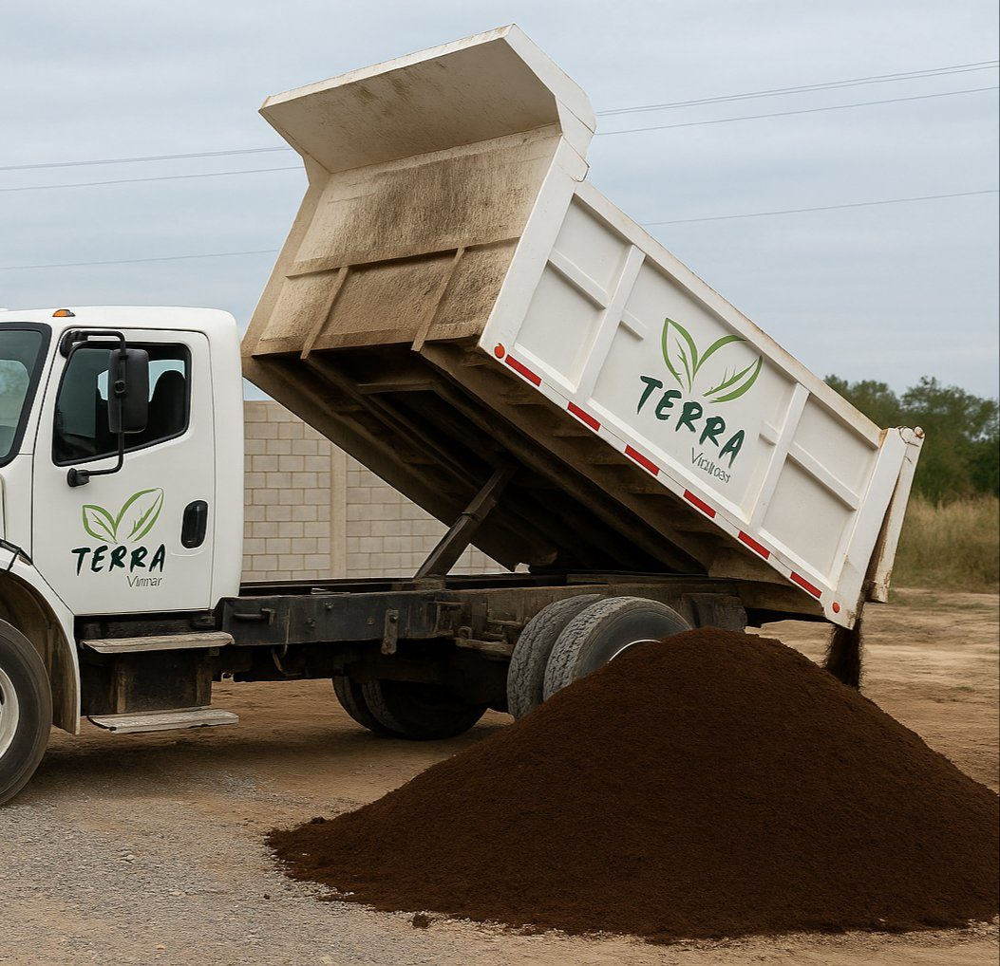
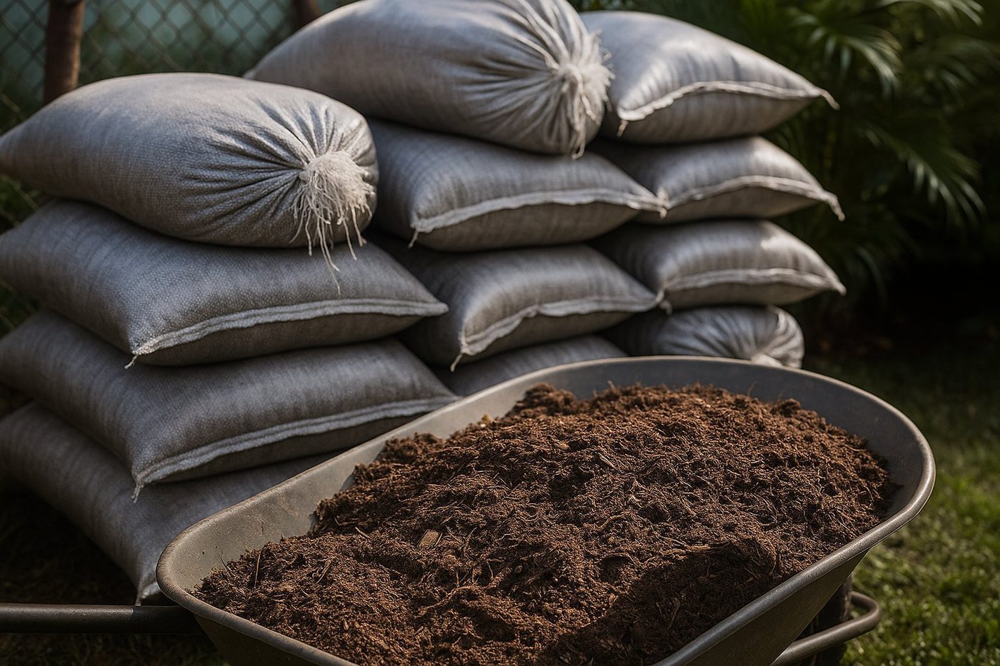
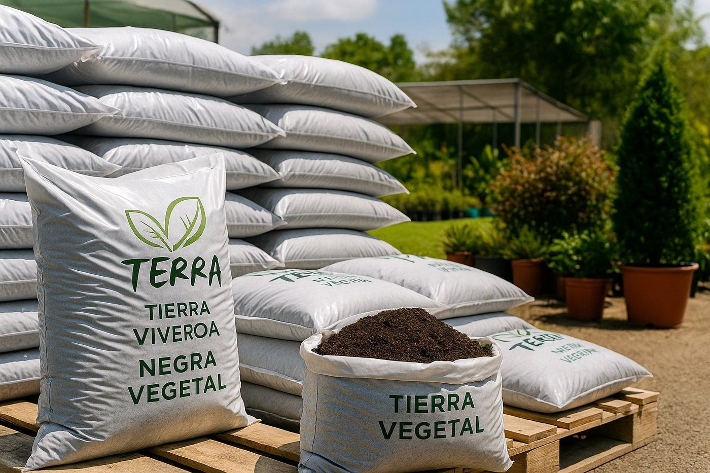

El sustrato orgánico que transforma el suelo arcilloso de Tamaulipas. Para jardines, pasto en rollo, árboles y proyectos de construcción.
Respuesta directa
Tierra negra vegetal en Tampico: costal desde $150 para cantidades pequeñas y camión volteo 5, 8 y 14 m³ con entrega a domicilio en Tampico, Madero y Altamira. Sin compromiso — respondemos hoy.
Sin compromiso · Respondemos hoy · Lun–Sáb 9am–6pm
El suelo natural de Tamaulipas es arcilloso y compacto — retiene agua en exceso durante las lluvias y se seca como piedra en temporada seca. Las raíces no penetran bien, el pasto no arraiga y las plantas no crecen.
La tierra negra vegetal es un sustrato orgánico rico en humus formado por materia vegetal descompuesta. Corrige exactamente esos problemas: airea el suelo, retiene humedad sin encharcar y aporta los nutrientes básicos que la tierra de Tampico no tiene.



Cada uso tiene su recomendación de cantidad y mezcla. Selecciona el tuyo y cotizamos exacto.
Una capa de 5–10 cm de tierra negra antes de instalar pasto San Agustín. El pasto arraiga 40% más rápido y el suelo no se compacta en el primer año.
Relleno de cajete con mezcla de tierra negra garantiza el arraigo de árboles ornamentales, palmas tropicales y arbustos recién plantados.
Aplicación superficial de 3–5 cm sobre jardines con suelo pobre o compacto. Mejora el color del pasto y la salud de las plantas sin remover el jardín.
Relleno y nivelación de terrenos irregulares antes de jardines, fraccionamientos o proyectos de construcción. Disponible en camiones volteo coordinados por etapas.
Sustrato base para macetones y jardineras. Se mezcla con perlita o arena gruesa 70/30 para optimizar el drenaje y evitar encharcamiento.
Áreas verdes en fraccionamientos, condominios, parques industriales y escuelas. Entregamos camiones coordinados por etapas con factura CFDI.
Calcula al instante y cotiza exacto por WhatsApp
Por costal de 30–40 kg · Precio orientativo
Ideal para macetas grandes, jardineras, cajetes individuales y pequeñas mejoras de jardín. Fácil de transportar en tu propio vehículo o con entrega a domicilio.
Camión de 5 m³ · Precio orientativo según zona
La opción más económica por m³. Disponible en 3 tamaños para adaptar exactamente al volumen de tu proyecto. Descarga directamente en tu domicilio o proyecto.
* Precios orientativos. El precio final depende del volumen, distancia de entrega y disponibilidad. Cotización gratis sin compromiso.



"Pedimos tierra negra para nivelar 200 m² antes de instalar pasto. El material llegó en perfectas condiciones, el camión descargó exactamente donde necesitábamos y el pasto arraigó en menos de 10 días. Resultado excelente."
"Compré costales para mejorar el jardín de mi casa en Madero. La diferencia con la tierra que tenía antes fue inmediata — las plantas están más verdes y el pasto que pusimos sobre ella arraigó muy rápido. Lo recomiendo."
Cotización sin compromiso. Te respondemos hoy mismo con precio exacto según tu proyecto.
Sin compromiso · Respuesta hoy · Lun–Sáb